3. WHAT IS SCATTEROMETRY?
Spaceborne remote sensing has the advantage of providing global coverage on a continuous basis at relatively low cost, which cannot be achieved through airborne or ground measurements. Scatterometry is a form of radar remote sensing that can measure various geophysical properties of surfaces and volumes based on the amplitude of microwave electromagnetic pulses that are transmitted from and scattered back to an antenna aboard the spacecraft (Figure 4). Because it is measuring these backscattered pulses, it is thus called a “scatterometer.”
Scatterometers were originally designed and are still used extensively to map wind speed and wind direction over the oceans (Figure 5). The returned radar pulses from small wind-driven ripples, or capillary waves, on the surface of the ocean interfere with, or “modulate,” each other in a way that allows the wind speed and direction to be derived. The same principle allows wind directions to be derived from Antarctic surface features and will be described in further detail in a later section. Foam generated at the ocean surface caused by large breaking waves, furthermore, has an electromagnetic response that is distinct from water at microwave frequencies that allows larger wind speeds to be deduced from scatterometry as well. Note that a scatterometer does not, therefore, directly measure wind; rather, wind properties are derived from backscatter responses. The SeaWinds instrument aboard the QuikSCAT satellite has been measuring winds in this manner over approximately 90% of the ice-free ocean on a daily basis since 19 July 1999 at 2 m/s and 20° accuracy, available via ftp from NASA’s Physical Oceanography Distributed Active Archive Center (NASA JPL, 2003b).
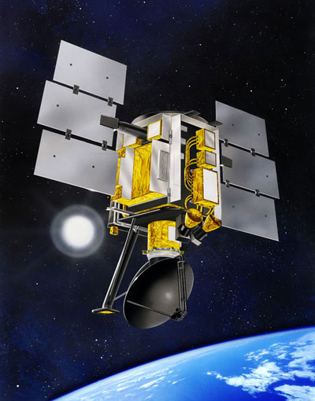 Fig. 4. QuikSCAT satellite; note black/grey antenna dish at bottom (NASA Earth Observatory, 2003). |
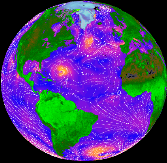 Fig. 5. Wind directions and velocities over the ocean as derived from QuikSCAT (NASA JPL, 2003b). |
Radar, originally an acronym for “radio detection and ranging” based on investigations of the reflection of radio waves in the late 1800s and early 1900s but now a word in its own right, was developed in earnest during World War II for navigation and target location. The first spaceborne radar missions took place in the 1950s and were used primarily for collecting reconnaissance images over politically unfriendly regions (Sabins, 1997). Radars employ their own power sources to send and receive return pulses in order to measure their duration, frequency, and/or amplitude in order to deduce various properties of the surfaces or volumes which reflect or scatter the pulse back to the radar antenna. As a result, the life of the radar instrument is physically limited by the amount of power that the radar satellite can store and generate. The radar pulse is usually in the microwave region of the electromagnetic spectrum, which broadly ranges in wavelength from 1 mm to 1 m.
Radars that measure the duration it takes for the transmitted pulse to return to the antenna can be used to deduce the distance of objects from the sensor in order to measure its elevation, or altimetry. These types or radars are known as “altimeters” and can also be used to create topographic images, or digital elevation models (DEMs). Radars which measure the frequency of the return pulse, on the other hand, can be used to deduce frequency shifts which allow the speed of objects to be estimated using Doppler theory; these types or radars are thus known as “Doppler radars” and are commonly employed from the ground looking up into the sky to measure precipitation. Lastly, radars which measure the power, or amplitude, of the return pulse scattered back to the antenna can be used to derive geophysical parameters of or to identify the illuminated surface or volume based on scattering principles of microwave electromagnetic radiation that will be explained shortly. These last types of radars are known as “scatterometers,” which are the focus of this paper.
Because it employs its own power source to generate pulses that are transmitted from the sensor, radar is considered an “active” form of remote sensing. In contrast, other forms of remote sensing are termed “passive” and only sense radiation that is naturally reflected and/or emitted from the Earth’s surface and atmosphere. Having its own illumination source gives radar distinct advantages over passive forms of remote sensing. For one, it allows the radar to operate regardless of the presence of sunlight so that it can obtain useful measurements at day and night. In contrast, passive remote sensors that operate in the visible end of the spectrum must rely on reflected sunlight for obtaining imagery. Another advantage of radar is that it controls the angle at which pulses are transmitted, while passive sensors must rely upon a single illumination angle: that of the sun. It follows, as well, that radars can transmit multiple pulses simultaneously at a variety of incident and azimuth angles, allowing a greater amount of information to be collected about a surface at once.
Passive sensors that sense microwave radiation are commonly referred to as “radiometers.” Both radars and radiometers have the capability of “seeing” through clouds: cloud particles are small enough compared to most microwave wavelengths that the waves pass freely through them without considerable scattering or absorption, which occurs at shorter wavelengths. For the same reason, both radars and radiometers have the capability to penetrate into surfaces, depending on the material, to detect subsurface features. Because of the relatively small amount of microwave radiation received at and emitted from the Earth’s surface (less than 0.0005 % of the total energy received from the sun), however, passive microwave remote sensing has considerably coarser resolution (50-100 km) compared to most radars and other forms of passive remote sensing. In comparison, synthetic aperture radars (SARs) can achieve 1-10 km resolution. Scatterometers have resolutions comparable to passive microwave radiometers, however, since they must average pulses received over a wide area in order to accurately measure the return amplitude. While this does not allow detailed analyses of surfaces, it does have the advantage of covering a larger portion of the globe on a more frequent basis than SAR, which is desirable for monitoring synoptic scale phenomena such as global ocean winds and snow cover, continental ice sheets, and polar sea ice extent.
The physics underlying scatterometry remote sensing is expressed succinctly by what is referred to as the “radar equation”:
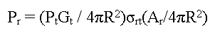
| where: |
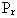 = received power,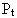 = transmitted power,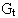 = gain of the transmitting antenna in the direction of the target,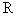 = distance between the target and the antenna,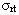 = radar cross-section: the area of the target intercepting the transmitted pulse that produces a return pulse equal to the received power,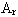 = effective receiving area of the receiving antenna aperture. |
The terms combined in the first set of parentheses define the total amount of transmitted power reaching a given target. When this amount of energy is multiplied by the radar cross-section, , this determines the amount of energy that the target scatters back to the antenna. Lastly, the terms combined in the second set of parentheses define the total amount of backscattered energy that is received at the radar antenna.
Of these parameters, ,
G, and A are all known quantities associated with the radar system, while
R is related to the location of the target and can be determined from the
duration it takes for the transmitted pulse to return to the antenna. Of greatest
interest to scatterometry, then, is the quantity, ,
which is a function of the way the transmitted electromagnetic energy interacts
with the surface. When this quantity is integrated over a number of pulses,
it is referred to as the “scattering coefficient,” or “backscattering
coefficient,” and is commonly denoted as  .
The quantity
.
The quantity  ,
then, which is expressed in decibels (dB), is used to derive
geophysical parameters and is the primary variable that scientists work with
when using scatterometry data.
,
then, which is expressed in decibels (dB), is used to derive
geophysical parameters and is the primary variable that scientists work with
when using scatterometry data.
There are two physical properties of surfaces and surface volumes
that determine the value of  :
its roughness and its dielectric properties.
A perfectly smooth surface will reflect an incident radar pulse like a mirror—90°
in the opposite direction from which it arrived—so that no energy is
scattered back into the direction that the pulse came from. A surface must
therefore be rough enough that some amount of energy is backscattered to the
radar antenna. As a result, rougher surfaces have higher values of
:
its roughness and its dielectric properties.
A perfectly smooth surface will reflect an incident radar pulse like a mirror—90°
in the opposite direction from which it arrived—so that no energy is
scattered back into the direction that the pulse came from. A surface must
therefore be rough enough that some amount of energy is backscattered to the
radar antenna. As a result, rougher surfaces have higher values of  .
A surface is “rough” from the perspective of a radar pulse depending
on the height of the roughness features on the surface relative to the radar’s
wavelength. This is expressed in the Rayleigh roughness criterion,
which considers a surface to be rough if:
.
A surface is “rough” from the perspective of a radar pulse depending
on the height of the roughness features on the surface relative to the radar’s
wavelength. This is expressed in the Rayleigh roughness criterion,
which considers a surface to be rough if:
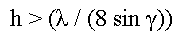
| where: |
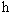 = vertical relief of the surface roughness features,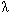 = radar wavelength,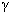 = depression angle of the radar pulse. |
Based on this criterion, a radar of 2-cm wavelength (or 15 GHz frequency) at a 50° depression angle would only be backscattered if the surface had features with a minimum vertical relief of about 3 mm. The response of radar backscatter to different surface roughnesses is illustrated in Figure 6.
Another result of surface roughness is the impact it has on
 over a range of illumination angles, or “incident angles.”
Because smooth surfaces have a mirror-like, or “specular,”
reflection, a radar satellite will only measure a return signal at nadir,
when it is directly above the target (an incident angle of 0°). At the
other extreme, an extremely rough surface scatters the signal so much that
the antenna receives a relatively equal amount of power regardless of incident
angle. This kind of surface is referred to as “isotropic,”
and the return signal is considered “noncoherent” as opposed to
specular, or coherent. Intermediate rough surfaces vary in their angular response
of
over a range of illumination angles, or “incident angles.”
Because smooth surfaces have a mirror-like, or “specular,”
reflection, a radar satellite will only measure a return signal at nadir,
when it is directly above the target (an incident angle of 0°). At the
other extreme, an extremely rough surface scatters the signal so much that
the antenna receives a relatively equal amount of power regardless of incident
angle. This kind of surface is referred to as “isotropic,”
and the return signal is considered “noncoherent” as opposed to
specular, or coherent. Intermediate rough surfaces vary in their angular response
of  between the specular and isotropic examples, as illustrated in Figure 7. This
change in angular backscatter response is important in identifying snow vs.
ice surfaces and old, rough sea ice surfaces vs. new, smooth sea ice surfaces.
Radar pulses penetrate snow surfaces and scatter multiple times within a volume
of snow so that the return response is strongly noncoherent. In contrast,
smooth ice is strongly specular while rough ice is less specular.
between the specular and isotropic examples, as illustrated in Figure 7. This
change in angular backscatter response is important in identifying snow vs.
ice surfaces and old, rough sea ice surfaces vs. new, smooth sea ice surfaces.
Radar pulses penetrate snow surfaces and scatter multiple times within a volume
of snow so that the return response is strongly noncoherent. In contrast,
smooth ice is strongly specular while rough ice is less specular.
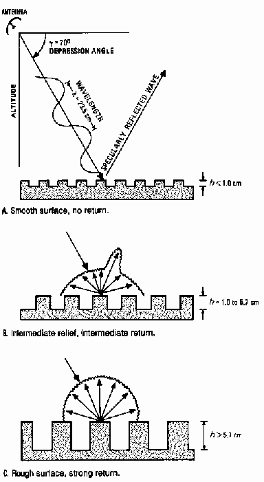 Fig. 6. Response of radar backscatter to different surface roughness criteria: (a) smooth, (b) intermediate, and (c) rough (Sabins, 1997). |
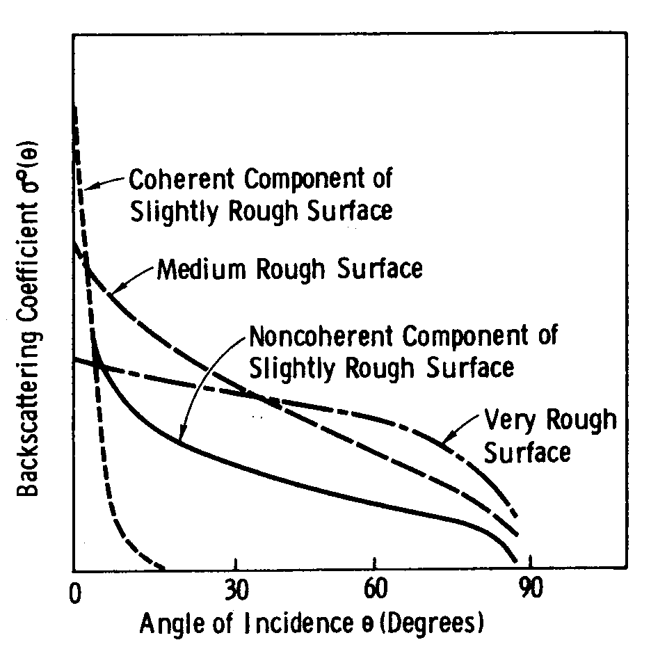 Fig. 7. Angular variation of backscatter for different roughness conditions (Ulaby et al., 1982b). |
In addition to roughness effects, the dielectric properties
of surface materials also strongly impact  .
The dielectric constant is an electrical property that influences
the interaction between matter and electromagnetic energy and is a function
of temperature and wavelength. This quantity is expressed in real and imaginary
components, with the former representing the amount of energy that the medium
scatters while the latter represents the amount of energy absorbed. The presence
of liquid water strongly increases the dielectric constant in the microwave
region, making
.
The dielectric constant is an electrical property that influences
the interaction between matter and electromagnetic energy and is a function
of temperature and wavelength. This quantity is expressed in real and imaginary
components, with the former representing the amount of energy that the medium
scatters while the latter represents the amount of energy absorbed. The presence
of liquid water strongly increases the dielectric constant in the microwave
region, making  very sensitive to moisture. This property of radar remote sensing makes scatterometry
an especially useful tool for detecting melting of snow and ice, as well as
for measuring soil moisture and vegetation water content.
very sensitive to moisture. This property of radar remote sensing makes scatterometry
an especially useful tool for detecting melting of snow and ice, as well as
for measuring soil moisture and vegetation water content.
As previously mentioned, the quantity of  is an integrated value, averaging together the result of several return pulses.
Averaging is necessary in order to achieve accurate measurements of
is an integrated value, averaging together the result of several return pulses.
Averaging is necessary in order to achieve accurate measurements of  because of the high level of noise present in any single return pulse. Because
pulses from multiple ground targets interfere with one another, the return
signal is distorted: a process referred to as “fading.”
A simplified example of fading resulting from two targets at a certain distance
from each other is illustrated in Figure 8. Note that the return signal from
this simplified example oscillates between peaks and troughs, resulting from
constructive and deconstructive interference. A more realistic scenario is
illustrated in Figure 9, which shows the kind of complex series of pulses
that results as the number of targets causing interference multiplies.
because of the high level of noise present in any single return pulse. Because
pulses from multiple ground targets interfere with one another, the return
signal is distorted: a process referred to as “fading.”
A simplified example of fading resulting from two targets at a certain distance
from each other is illustrated in Figure 8. Note that the return signal from
this simplified example oscillates between peaks and troughs, resulting from
constructive and deconstructive interference. A more realistic scenario is
illustrated in Figure 9, which shows the kind of complex series of pulses
that results as the number of targets causing interference multiplies.
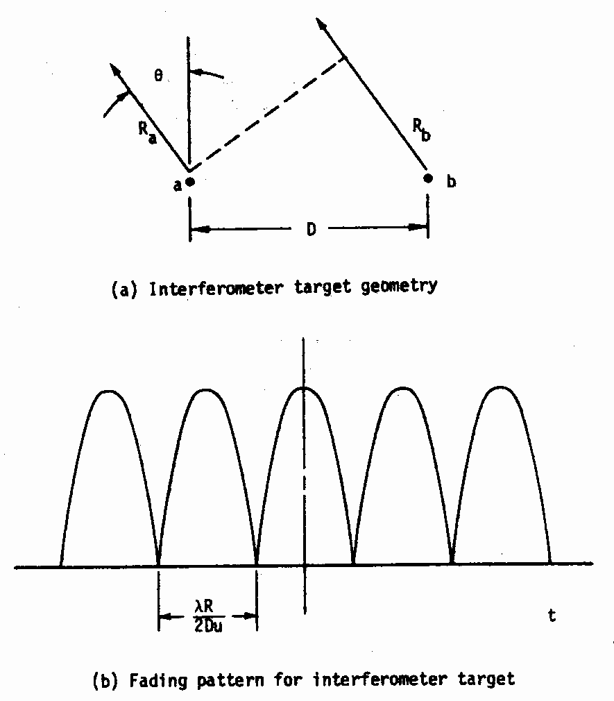 Fig. 8. Simplified target fading (Moore, 1983). |
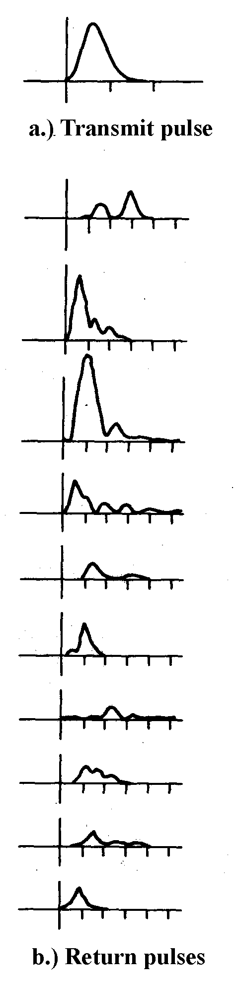 Fig. 9. Sequence of pulses returned to the receiver showing the fading (variability of signal levels) on a pulse-to-pulse basis (Moore, 1983). |
Averaging together a sufficient number of return pulses has
the effect of canceling out these variations, or noise, caused by fading so
that an accurate measurement of  can be made. Scatterometers can achieve ± 0.10 – 0.15 dB accuracy
using this method. The downside to averaging together multiple return pulses,
however, is a significant reduction in spatial resolution.
This explains why SARs can achieve 1-10 km resolution while scatterometers
typically have 25-50 km resolution. Because SAR instruments are used primarily
for topographic imaging and altimetry, they are concerned with measuring the
duration it takes for a pulse to return from a target and not with measuring
its amplitude. Noise is not a concern, then, for SAR remote sensing and the
fine spatial resolution achieved with single pulses can be exploited.
can be made. Scatterometers can achieve ± 0.10 – 0.15 dB accuracy
using this method. The downside to averaging together multiple return pulses,
however, is a significant reduction in spatial resolution.
This explains why SARs can achieve 1-10 km resolution while scatterometers
typically have 25-50 km resolution. Because SAR instruments are used primarily
for topographic imaging and altimetry, they are concerned with measuring the
duration it takes for a pulse to return from a target and not with measuring
its amplitude. Noise is not a concern, then, for SAR remote sensing and the
fine spatial resolution achieved with single pulses can be exploited.
One last characteristic to consider of scatterometer systems is the techniques they employ for collecting measurements at multiple incident and azimuth angles. An incident angle measures the vertical angle between the direction directly below the satellite platform (0°) and parallel to it (90°). An azimuth angle measures the horizontal angle between the forward direction (0°) of the satellite and the direction to its rear (180°), with 90° to its right and 270° to its left. Some scatterometers use a “fan-beam” approach to collecting data from multiple angles, which means that it fans out, or points, several fixed-angle “beams” of radar pulses at the ground simultaneously (Figure 10). Another approach is to rotate a single beam of pulses at multiple angles, which is referred to as a “pencil-beam” approach.
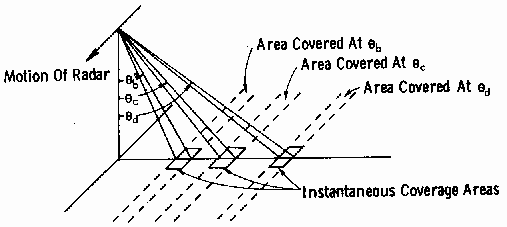
Fig. 10. Example of a fan-beam scatterometer (Ulaby et al., 1982).
Of the four different kinds of spaceborne scatterometers that have been deployed, three have been fan-beam scatterometers and one is a conically scanning pencil-beam scatterometer. These four scatterometers are, listed in chronological order:
- SASS: the Seasat-A Satellite
Scatterometer, which was flown on NASA’s Seasat satellite
and operated between June and October, 1978 before power failure terminated
the mission.
- ESCAT: the European Space
Agency’s (ESA) Earth Remote Sensing (ERS)-1 & -2
Active Microwave Instrument (AMI) scatterometer, the first of which operated
between 1992-1996 and the second of which has been operating since 1996.
- NSCAT: the NASA Scatterometer
(NSCAT), which was flown aboard the Japanese Aerospace Exploration Agency’s
(JAXA; then known as NASDA) Advanced Earth Observing Satellite (ADEOS)-I
(also sometimes referred to as Midori-I) between August,
1996 and June, 1997 before a power failure prematurely terminated this mission
as well.
- QSCAT: NASA Quick Scatterometer (QuikSCAT) SeaWinds instrument, flown aboard QuikSCAT from 1999 to the present as well as on the JAXA ADEOS-II satellite (also referred to as Midori-II) as SeaWinds-II from 2002 until late September 2003 when a power failure also terminated this mission.
These instruments will be referred to heretofore by the abbreviations SASS, ESCAT, NSCAT, and QSCAT. Each of their characteristics are compared in Figure 11, including their frequencies, azimuthal configurations, spatial resolutions, swath patterns (the shape and total areas that they illuminate as they orbit the Earth), and range of incidence angles. Only QSCAT employs a pencil-beam approach. For a more detailed illustration of the fan-beam and pencil-beam azimuthal patterns that these four scatterometers employ, see Figure 12.
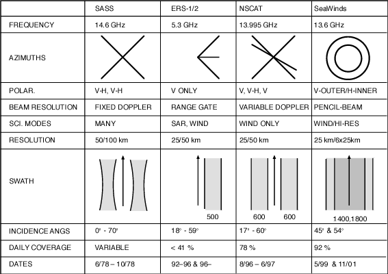
Fig. 11. Comparison of different scatterometer characteristics (Long et al., 2001).
Note in Figure 11 that ESCAT has a lower frequency than the other three instruments: it operates at “C”-band while the other three operate at “Ku”-band frequencies, which is significant since different frequency ranges have different penetration depths and roughness criterion, as previously explained. Most importantly, it can be seen that scatterometers have covered the period of 1978 to the present, with a large gap between SASS in 1978 and the first ESCAT in 1992. This limits the use of scatterometry for studying long-term climate change thus far due to the short time series, though this will obviously improve as scatterometers continue to be flown.
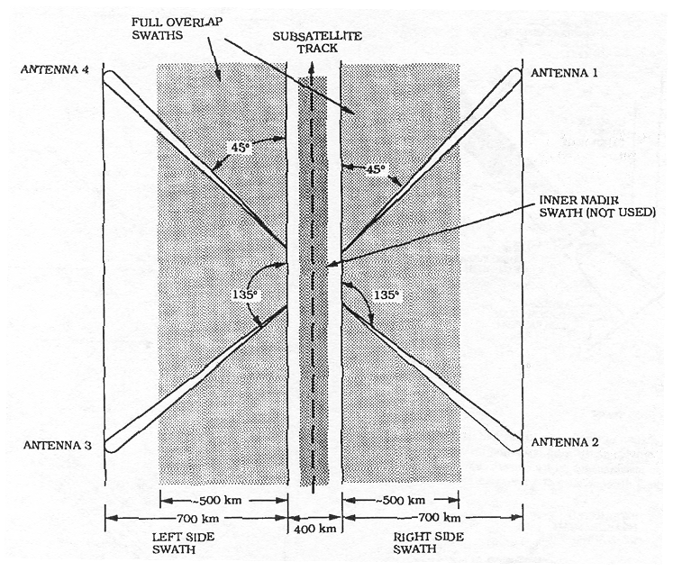 (a) SASS viewing geometry (Long et al., 1993). |
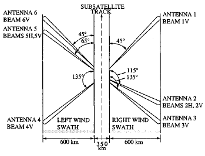 (c) NSCAT viewing geometry (Long and Drinkwater, 2000). |
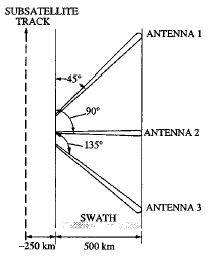 (b) ESCAT viewing geometry (Long and Drinkwater, 2000). |
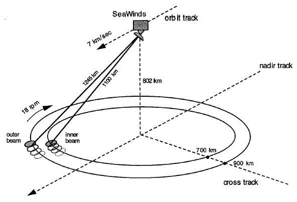 (d) QSCAT viewing geometry (Spencer et al., 2000). |
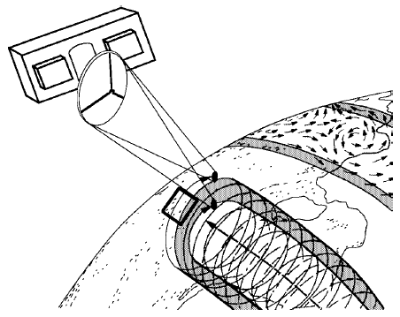 (e) QSCAT scanning pattern showing helixes traced by the inner beam (light shade) and outer beam (dark shade) as spacecraft orbits (Spencer et al., 1997). |
|
|
Fig. 12. (a-d)
Comparison of different scatterometer viewing geometries and (e) illustration
of QSCAT scanning pattern. |
|
{kind=link}
Because of the multiple incidence angles at which scatterometers
measure  ,
data are normally treated in two ways: by normalizing
,
data are normally treated in two ways: by normalizing  to
a single incidence angle and by providing the slope of
to
a single incidence angle and by providing the slope of  versus incidence angle, which are respectively referred to in the literature
simply as A and B (Long
et al., 1993). Data are normalized to a common incidence angle (A)
so that backscatter measurements between different areas, times, or instruments
can be more readily compared. In this process, data are usually limited to
incidence angles between about 20° and 50° because measurements at
more extreme incidence angles are more noisy. A data are commonly
normalized to an incidence angle of 40° because this is roughly mid-swath
for most instruments. Because important information can also be gained from
the variation between
versus incidence angle, which are respectively referred to in the literature
simply as A and B (Long
et al., 1993). Data are normalized to a common incidence angle (A)
so that backscatter measurements between different areas, times, or instruments
can be more readily compared. In this process, data are usually limited to
incidence angles between about 20° and 50° because measurements at
more extreme incidence angles are more noisy. A data are commonly
normalized to an incidence angle of 40° because this is roughly mid-swath
for most instruments. Because important information can also be gained from
the variation between  and incidence angle (recall that specular surfaces are dominated by nadir
return pulses while rougher, more isotropic surfaces have a flatter response
across all incidence angles), the slope of
and incidence angle (recall that specular surfaces are dominated by nadir
return pulses while rougher, more isotropic surfaces have a flatter response
across all incidence angles), the slope of  versus incidence angle (B) is also important in scatterometry data.
A more negative B value (i.e. more straight up and down) is specular
while a less negative B value (i.e. one that approaches zero) is
rougher and more isotropic.
versus incidence angle (B) is also important in scatterometry data.
A more negative B value (i.e. more straight up and down) is specular
while a less negative B value (i.e. one that approaches zero) is
rougher and more isotropic.
Another topic regarding scatterometry data is resolution enhancement. Though the 25-50 km resolution of past and current scatterometers is sufficient for mapping winds over the ocean at large scales (scatterometry’s primary objective), finer resolution is often desired for many land and cryospheric applications. One method that has been used to accomplish this has been achieved primarily by averaging together data at the same location on the Earth from multiple orbital passes of the scatterometer (Figure 13). Because more independent measurements are combined, the signal-to-noise (SNR) ratio is further improved, diminishing the effect of fading, as previously described. David Long and others developed this technique in 1993 and have labeled it “Scatterometer Image Reconstruction,” or SIR, which is now a common format for distributing scatterometer data (Long et al., 1993). Using this technique, spatial resolution can be improved by up to 8-10 times, depending on the number of multiple passes combined to generate A and B. Most commonly, data are averaged over a period of six days, which results in 8-10 km resolution SASS, NSCAT, and QSCAT data and 20-25 km ESCAT data (ESCAT data is more coarse as a result of only measuring data from only one side of the satellite, as illustrated in Figure 11). Of course, the tradeoff to this using this technique is degraded temporal resolution, which may be a problem for certain applications.
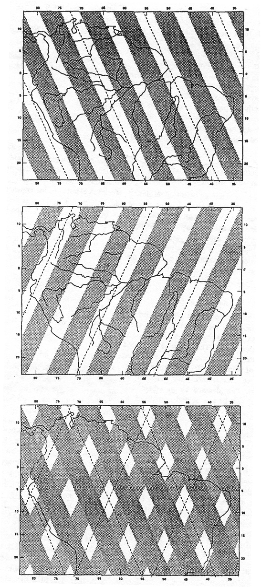 Fig. 13. Swath coverage spanning several days showing the crossing patterns of ascending (top) and descending (middle) orbit passes over northern South America, along with the combination of both (bottom) (Long et al., 1993). |
The SIR resolution enhancement technique makes two assumptions that can introduce errors into the data: it assumes that the radar characteristics of the surface do not change significantly over the time period for averaging, and it assumes that A and B do not have any azimuthal dependence since it combines measurements from overlapping orbital passes with different azimuthal orientations to the surface.
A collaborative effort between NASA, Brigham Young University, the Jet Propulsion Laboratory, the European Space Agency, and the U.S. National Ice Center has resulted in the recently established Scatterometer Climate Record Pathfinder (SCP) project (BYU, 2003). This project provides a single archive for collecting, producing, and distributing SIR-enhanced scatterometer data in a common format for land and cryospheric applications. Both A and B data are available for SASS, ESCAT, NSCAT, and QSCAT with the goal of encouraging and facilitating climate studies involving these data.
NEXT
 Cryospheric
applications of scatterometry
Cryospheric
applications of scatterometry
Introduction
• Importance
of the cryosphere • What
is scatterometry?
Cryospheric applications of scatterometry • Problems,
issues, and future directions • Conclusion
• References
© 2004,